Overview
In this project we built a physically based path tracer from the ground up. We started with the basics: generating camera rays through each pixel and testing them against triangles and spheres. Testing every ray against every triangle was far too slow for real meshes, so next we built a bounding volume hierarchy (BVH), which let each ray skip almost all of the scene and took renders of meshes with hundreds of thousands of triangles from impractical to under a second.
With fast intersection in place, we moved on to lighting. We first implemented direct illumination in two ways, uniform hemisphere sampling and light (importance) sampling, and saw how much less noise we got by aiming samples at the lights. Then we added global illumination by letting rays bounce around the scene recursively, using Russian Roulette to end paths at random without biasing the result. This gave us effects a rasterizer can't produce on its own, like soft shadows, a lit ceiling, and color bleeding from the walls. Finally, we added adaptive sampling, which stops sampling a pixel once its value has converged and spends the saved samples on the noisy parts of the image.
The biggest takeaway for us was how much of rendering comes down to Monte Carlo estimation. Almost every step was a trade-off between noise and render time, and most of our improvements (light sampling, cosine-weighted bounces, Russian Roulette, adaptive sampling) were ways of putting samples where they matter most, so we get a cleaner image for the same amount of work.
Part 1: Ray Generation and Scene Intersection (20 Points)
Walk through the ray generation and primitive intersection parts of the rendering pipeline.
We rendered one pixel at a time by shooting rays from the camera out through that pixel, finding the closest object each ray hit, and shading it.
For ray generation, we started from the idea that a pixel covers a small area, not a single point, so we took a bunch of samples at random spots inside it and averaged their colors (this is what smooths out the jagged edges). To turn each sample into a ray, we figured out which direction the camera would be looking to see that spot on the image, and sent a ray from the camera's position in that direction. We also gave each ray a near and far limit so only geometry within that range showed up.
For intersection, we checked each ray against the objects in the scene to find the closest one it hit. Each time we found a hit we shortened the ray to that distance, so anything farther away got skipped and whatever was left at the end was the nearest surface. For each hit we recorded how far away it was, the surface normal there, and the object's material, which the shading steps need later. Spheres and triangles each have their own hit test: for a sphere, we solve the ray-sphere equation, take the nearest point in front of the camera, and read its normal as the direction straight out from the center.
Explain the triangle intersection algorithm you implemented in your own words.
We used the Möller–Trumbore algorithm. The idea was to solve for exactly where along the ray it meets the triangle's plane and where that point sits relative to the three corners, both at once, and then check that the point is really inside the triangle.
In more detail: any point inside a triangle can be written as a weighted blend of its three corners, where the weights (\(b_1\) and \(b_2\)) say how close the point is to each one:
\( \mathbf{O} + t\mathbf{D} = (1 - b_1 - b_2)\,\mathbf{P}_1 + b_1\mathbf{P}_2 + b_2\mathbf{P}_3 \)
Setting a point on the ray equal to one of those blends gave us three equations in the three unknowns \(t\), \(b_1\), and \(b_2\), which we solved with Cramer's rule. It comes out to a few cross and dot products, with \( \mathbf{E}_1 = \mathbf{P}_2 - \mathbf{P}_1 \), \( \mathbf{E}_2 = \mathbf{P}_3 - \mathbf{P}_1 \), \( \mathbf{S} = \mathbf{O} - \mathbf{P}_1 \), \( \mathbf{S}_1 = \mathbf{D} \times \mathbf{E}_2 \), and \( \mathbf{S}_2 = \mathbf{S} \times \mathbf{E}_1 \):
\( \begin{bmatrix} t \\ b_1 \\ b_2 \end{bmatrix} = \dfrac{1}{\mathbf{S}_1 \cdot \mathbf{E}_1} \begin{bmatrix} \mathbf{S}_2 \cdot \mathbf{E}_2 \\ \mathbf{S}_1 \cdot \mathbf{S} \\ \mathbf{S}_2 \cdot \mathbf{D} \end{bmatrix} \)
If the denominator \( \mathbf{S}_1 \cdot \mathbf{E}_1 \) came out near zero the ray was parallel to the triangle and we
called it a miss. Otherwise it counted as a real hit only if \(t\) was in \([t_{\min}, t_{\max}]\) and the weights put the
point inside the triangle (\(b_1 \ge 0\), \(b_2 \ge 0\), and \(b_1 + b_2 \le 1\)), and on a hit we pulled
max_t in to that distance. In
intersect we reused those same weights to blend the three corners' normals together,
\( \mathbf{n} = (1 - b_1 - b_2)\,\mathbf{n}_1 + b_1\mathbf{n}_2 + b_2\mathbf{n}_3 \), which smooths the
shading across the mesh instead of leaving each flat triangle visible. has_intersection ran the same
test but just returned whether there was a hit.
Show images with normal shading for a few small .dae files.
|
|

|

|
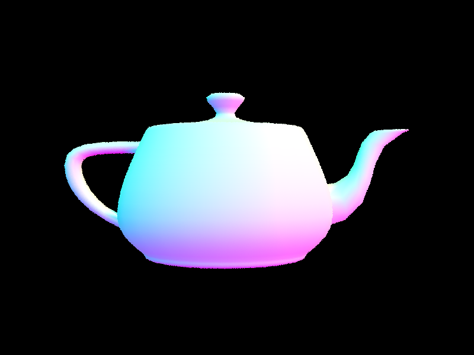 |
These use normal shading, where we turn each surface's normal into a color by using its X, Y, and Z parts as red, green, and blue. The Cornell box walls are each one flat color because a wall is flat and faces the same way all over. The spheres come out as a smooth gradient since we get their normals right from the geometry, and the banana and teapot look smooth because we blend the normals across each triangle instead of giving every face a single normal.
Part 2: Bounding Volume Hierarchy (20 Points)
Walk through your BVH construction algorithm. Explain the heuristic you chose for picking the splitting point.
We built the tree in construct_bvh by having it call itself on smaller and smaller groups of triangles.
So that we wouldn't have to copy triangles around every time we split a group, we decided to keep one big list the
whole time and just shuffle triangles within it, so each node only has to remember which slice of that list belongs
to it. For each
group, we first found the bounding box around all of its triangles (the box we store in the node) and tracked where
each triangle's center sat, which we needed for splitting. To decide when to stop, we checked the group's size: if it
had few enough triangles (max_leaf_size or fewer) we made it a leaf. Otherwise we split the group in two
and did the same thing on each half.
To split a group, we first had to decide which direction to cut along (x, y, or z). We chose the direction where the triangle centers were most spread out, since cutting across the widest spread separates them the most. We decided to go off the triangle centers rather than the triangles themselves, because one big, long triangle can make a group look wide even when everything is really clustered together. Once we had the direction, we needed a place to cut, and we used the average position of all the centers along that direction. Triangles whose center fell below the cutoff went left and the rest went right, and we ran the same steps on each half.
We picked the average rather than just the middle of the box so the split would follow where the triangles really are. When most of the triangles are bunched at one end, the average sits near them and we still get two fairly even halves. The problem is that the average can sometimes leave one side empty, which would make the recursion run forever, so in that case we split at the median instead, which always puts triangles on both sides.
To check whether a ray hits a box, we used the slab method, which intersects the ray against the box's planes on each
axis and sees if any part of the ray stays inside all of them. When walking the tree, we checked a node's box first
and skipped its whole subtree if the ray missed it. If the ray did hit the box, we checked both of the node's children
(their boxes can overlap, so the closest triangle might be in either one) until we reached a leaf, where we tested the
ray against the actual triangles. Each time we found a hit we shrank the ray so it wouldn't look past it, which let us
skip any boxes sitting farther away. has_intersection did the same thing but stopped as soon as it found
any hit.
Show images with normal shading for a few large .dae files that you can only render with BVH acceleration.
|
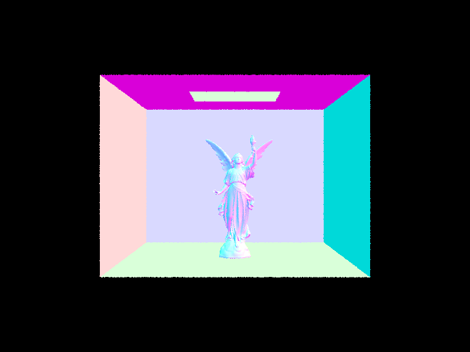 |
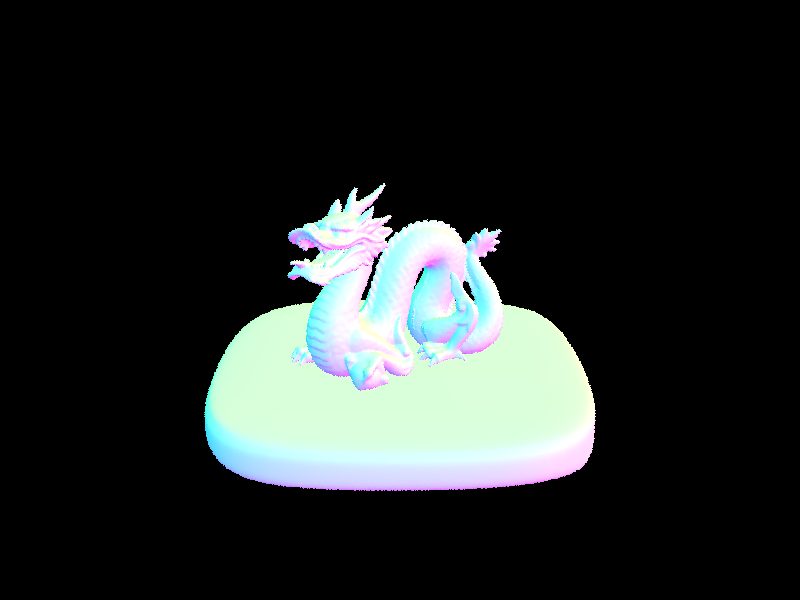 |
|
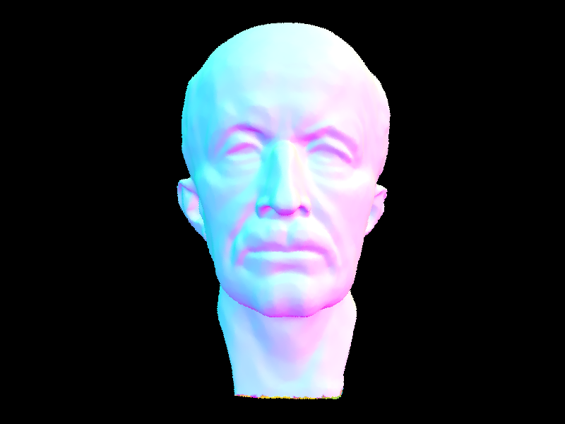 |
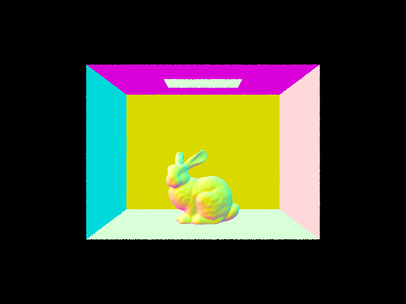 |
With the BVH, each of these rendered in under 0.05 seconds at 800x600 on 8 threads, and building the tree took at most 0.04 seconds (for CBlucy). On average a ray only needed 3–7 triangle tests, even though these scenes have tens to hundreds of thousands of triangles.
Compare rendering times on a few scenes with moderately complex geometries with and without BVH acceleration. Present your results in a one-paragraph analysis.
| Scene | Primitives | Render time (no BVH) | Render time (BVH) | Speedup | Tests / ray (no BVH) | Tests / ray (BVH) |
|---|---|---|---|---|---|---|
| meshedit/teapot.dae | 2,464 | 1.688 s | 0.034 s | ~50x | 550.5 | 5.6 |
| keenan/banana.dae | 2,458 | 2.252 s | 0.022 s | ~104x | 534.1 | 2.6 |
| meshedit/cow.dae | 5,856 | 5.337 s | 0.038 s | ~139x | 1275.0 | 6.9 |
| meshedit/beetle.dae | 7,558 | 7.180 s | 0.028 s | ~258x | 1640.5 | 4.0 |
-t 8), normal shading.Without a BVH, each ray has to be tested against every triangle in the scene, so the render time climbs with the triangle count (1.7 s to 7.2 s going from the teapot to the beetle). With the BVH, a ray only checks the few triangles in the boxes it actually hits, which dropped the tests per ray to between 2.6 and 6.9 and the render times to 0.02–0.04 s, a 50x to 258x speedup. Building the tree only takes a few milliseconds, and the images came out the same either way aside from normal sampling noise.
Part 3: Direct Illumination (20 Points)
Walk through both implementations of the direct lighting function.
Both functions estimate how much light leaves the hit point toward the camera, adding up the light coming in from
every direction weighted by the surface's reflectance and the angle it comes in at. The difference between the two
methods is only in how they pick which incoming directions to sample. Both build a local frame at the hit point with
make_coord_space so the surface normal points straight up, which makes the angle term easy to compute.
Rays are cast in world space, so we convert between the two frames with o2w / w2o.
Uniform hemisphere sampling (estimate_direct_lighting_hemisphere) worked like this:
- We took N = (number of lights) x
ns_area_lightuniformly random directions and cast each as a ray withmin_t = EPS_F. - If a ray reached a light, its emission contributed; everything else returned zero.
- We averaged the contributions over all N samples.
Light (importance) sampling (estimate_direct_lighting_importance) worked like this:
- We sampled the lights directly instead of hoping to hit one. For each light we took one sample if it was a delta
light (point or directional) and
ns_area_lightsamples otherwise. sample_Lgave us the incoming light, a direction toward the light, the distance, and the pdf.- We skipped directions below the surface, otherwise cast a shadow ray up to just before the light
(
max_t = distToLight − EPS_F). - If
has_intersectionfound no blocker, the sample contributed.
The difference is that hemisphere sampling wastes most of its samples on directions that miss the light, while light sampling aims right at the lights, so it is much less noisy for the same sample count.
Show some images rendered with both implementations of the direct lighting function.
| Uniform Hemisphere Sampling | Light Sampling |
|---|---|
|
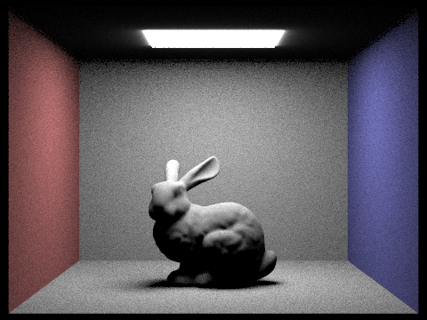 |
|
|
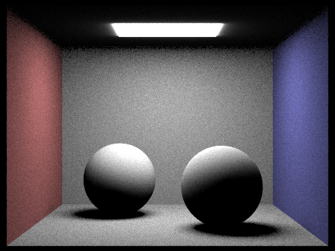 |
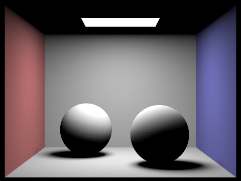 |

|
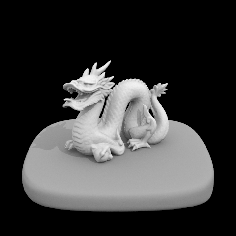 |
-t 8 -s 64 -l 32 -m 6; CB scenes at 480x360, dragon at 480x480.Focus on one particular scene with at least one area light and compare the noise levels in soft shadows when rendering with 1, 4, 16, and 64 light rays (the -l flag) and with 1 sample per pixel (the -s flag) using light sampling, not uniform hemisphere sampling.
|
|
|
|
|
|
-s 1 -m 6 at 480x360 using light sampling.The soft shadow under the bunny is the penumbra, the area that can only see part of the light. With 1 light ray, each point either hit the one spot we sampled on the light or missed it, so every pixel came out either fully lit or fully dark and the shadow edge was just a mess of black and white specks. With 4 rays each pixel could land somewhere in between, so it started to look like a gradient but was still grainy. At 16 rays the shadow was mostly smooth with a little grain left, and at 64 rays it looked smooth with barely any noise. Adding more rays cut the noise down steadily, but we needed a lot more of them each time to see the same improvement. The fully lit and fully shadowed areas looked clean even at 1 ray, since every sample there agreed anyway.
Compare the results between uniform hemisphere sampling and lighting sampling in a one-paragraph analysis.
At the same sample count (-s 64 -l 32), light sampling was a lot cleaner. The hemisphere-sampled CBbunny and
CBspheres were grainy everywhere with noisy shadows, while the light-sampled versions had smooth walls and clean soft shadows.
The difference was where the samples went. Hemisphere sampling fired rays in random directions without knowing where the light
was, and since the light only took up a small part of the scene above any point, most of those rays missed it and added nothing.
The few that did hit the light counted for a lot, so nearby pixels came out very different and the image looked speckled. Light
sampling pointed the rays right at the lights instead, so almost every one landed on a light and the only dark spots were from
something actually blocking it. Both methods reached the same image once we took enough samples, but light sampling got there
with much fewer rays.
Light sampling also ran faster (23.8 s vs 38.9 s for CBbunny, 18.3 s vs 42.2 s for CBspheres). This is because its shadow rays
only had to check whether anything was in the way between the point and the light and could stop at the first blocker, while
hemisphere rays had to find the closest surface along a ray that just kept going. Hemisphere sampling also couldn't handle point
or directional lights, because a random direction almost never lines up with an exact point or direction, which is why the dragon
scene (lit only by a directional light) came out completely black. The last difference we noticed was a bright glow around the
ceiling light in the hemisphere version that light sampling didn't have, since our light-sampling code treated that light as only
shining downward while hemisphere sampling picked up its glow in every direction.
Part 4: Global Illumination (20 Points)
Walk through your implementation of the indirect lighting function.
To bounce indirectly we needed a new direction to send the ray, so DiffuseBSDF::sample_f picked one and handed
back how likely that direction was along with how much light the surface reflects. It favored directions closer to straight
out from the surface, where more light bounces off, which gave us a cleaner result for the same number of samples. We tracked
how many bounces a path had left in r.depth: a camera ray started at max_ray_depth and each bounce
cast a new ray with one less, so a hit at depth == 1 was the last bounce.
est_radiance_global_illumination traced the camera ray into the scene and returned black if it hit nothing.
Otherwise it added the light coming straight off whatever the ray hit (the zero-bounce term) plus all the bounced light from
at_least_one_bounce_radiance, as long as we allowed at least one bounce. In non-accumulate mode we only kept that
zero-bounce term when the depth was 0, since there we wanted to see just the m-th bounce on its own.
at_least_one_bounce_radiance was the recursive part. At each hit it first added the direct light from
one_bounce_radiance (the Part 3 estimate); accumulate mode did this at every bounce, while non-accumulate mode did
it only on the last bounce so we could see the m-th bounce by itself. It stopped once the path ran out of depth, and before
that it could also end early through Russian Roulette: we always traced the first bounce, then gave each later one about a 65%
chance of continuing. A path that survived picked a new direction off the surface, cast a ray for the next bounce, and if that
ray hit something we recursed to get the light coming back from it. We divided that returned light by the survival chance so
the image stayed correct on average even though we cut some paths short. We never added the next hit's own glow, since
one_bounce_radiance had already counted it at the current point.
To render the comparison views without recompiling, we added two environment variables that changed the behavior at startup:
PT_NO_RR=1 turned off Russian Roulette for the fixed-depth per-bounce renders, and PT_INDIRECT_ONLY=1
dropped the direct light so only the bounced light was left.
Show some images rendered with global (direct and indirect) illumination. Use 1024 samples per pixel.
|
|
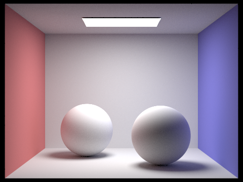 |
|
|
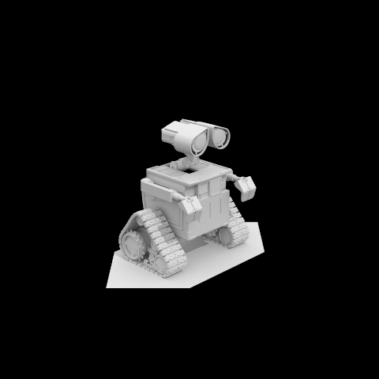 |
-s 1024 -l 4 -m 5.Pick one scene and compare rendered views first with only direct illumination, then only indirect illumination. Use 1024 samples per pixel.
|
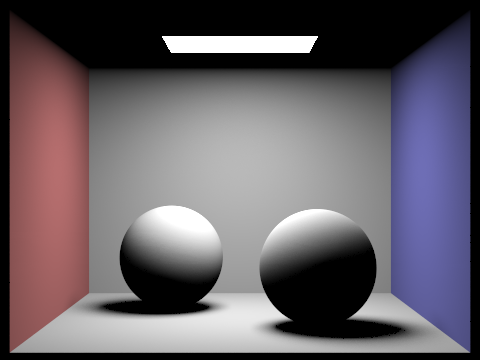 |
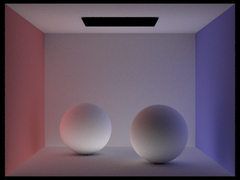 |
-m 1; indirect = -m 5 with PT_INDIRECT_ONLY=1.The direct-only image has just the light and whatever it hits straight on, so the ceiling and the bottoms of the spheres are black and the shadows have sharp edges. On the indirect image on the other hand, the light itself is black, and the bright parts are the areas that were dark before. The ceiling and the bottoms of the spheres now pick up light that bounced off the floor, the shadows fill in, and the wall colors rub off onto the spheres (a bit red facing the red wall, a bit blue facing the blue). By adding the two together, we get the full render.
For CBbunny.dae, render the m-th bounce of light with max_ray_depth set to 0, 1, 2, 3, 4, and 5 (the -m flag), and isAccumBounces=false. Explain in your write-up what you see for the 2nd and 3rd bounce of light, and how it contributes to the quality of the rendered image compared to rasterization. Use 1024 samples per pixel.
|
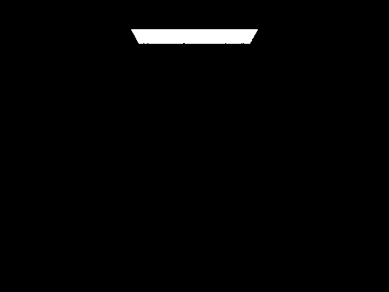 |
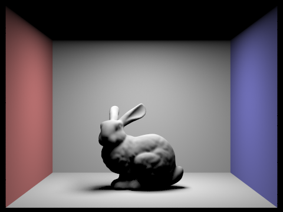 |
|
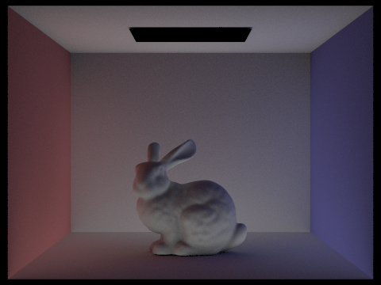 |
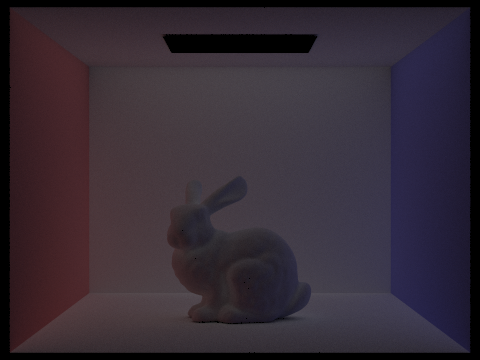 |
|
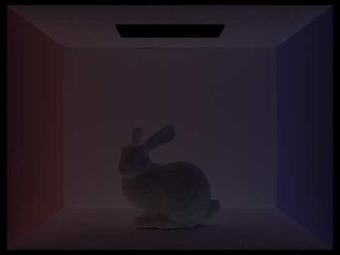 |
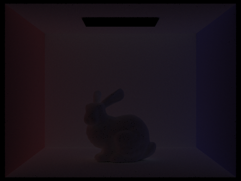 |
-s 1024 -l 4 -m m -o 0, Russian Roulette off.The 0th bounce was only the light, and the 1st was ordinary direct lighting with a dark ceiling and hard shadows. The 2nd bounce was light that hit one surface and then lit another, so it looked roughly like the opposite of the first: the ceiling, the shadow under the bunny, and the bunny's underside were now lit, and color bleeding showed up (red on the bunny's left, blue on its right). The 3rd bounce was dimmer, since each surface sent back less light than it got, and smoother, since the light now came in evenly from all directions. It mostly added a soft fill, and later bounces were fainter still.
These bounces are what a rasterizer misses. A rasterizer only does direct lighting and approximates the rest with a single flat ambient value, so the ceiling stays dark, shadows have hard edges, and a surface never picks up color from the wall next to it. The 2nd and 3rd bounces are what fix all of that, and together they make the scene look like a real room instead of a flat render.
For CBbunny.dae, compare rendered views of accumulated and unaccumulated bounces with max_ray_depth set to 0, 1, 2, 3, 4, and 5 (the -m flag). Use 1024 samples per pixel.
| max_ray_depth | Unaccumulated (m-th bounce only) | Accumulated (bounces 0 through m) |
|---|---|---|
| 0 | 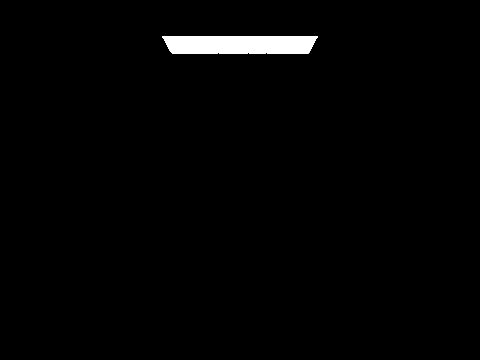 |
|
| 1 | ||
| 2 | ||
| 3 | ||
| 4 | ||
| 5 |
-s 1024 -l 4 -o 0 vs -o 1, Russian Roulette off.At m = 0 and m = 1 the columns differ only in that the accumulated m = 1 also shows the light source. From m = 2 on, the unaccumulated images darken each step as each single bounce gets fainter, while the accumulated ones brighten by less each time: the jump from m = 1 to m = 2 is large, m = 2 to m = 3 smaller, and m = 4 and m = 5 look nearly the same. Each accumulated image is just the running sum of the unaccumulated ones up to that row.
For CBbunny.dae, output the Russian Roulette rendering with max_ray_depth set to 0, 1, 2, 3, 4, and 100 (the -m flag). Use 1024 samples per pixel.
|
|
|
|
|
|
|
|
|
-s 1024 -l 4 -m m, accumulated, Russian Roulette with continuation probability 0.65.Pick one scene and compare rendered views with various sample-per-pixel rates, including at least 1, 2, 4, 8, 16, 64, and 1024. Use 4 light rays.
|
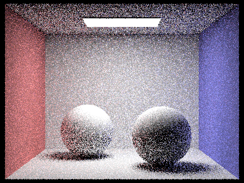 |
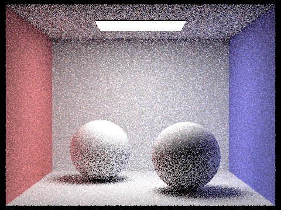 |
|
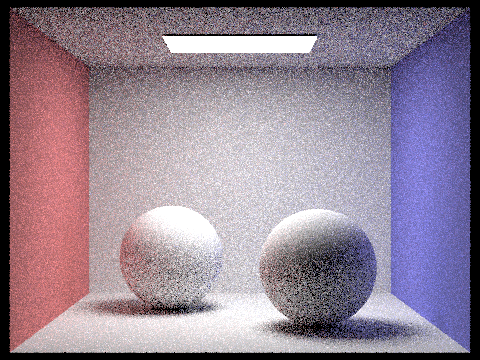 |
|
|
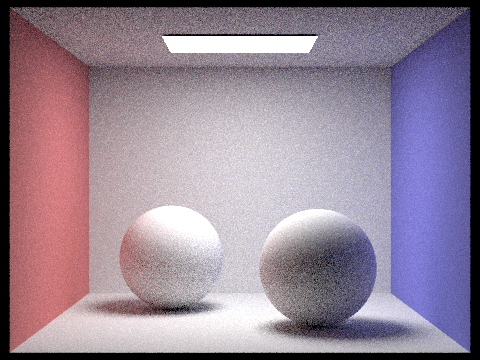 |
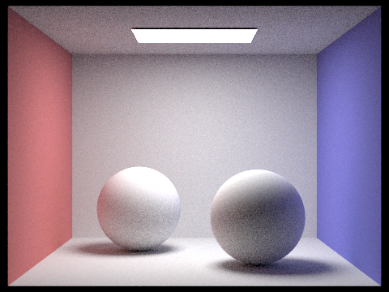 |
|
|
-s N -l 4 -m 5.At 1 spp each pixel only got a single random path, so the whole image was covered in black-and-white noise. The directly lit areas were already recognizable, since 4 light rays were enough to get the direct lighting right, but the indirect lighting (ceiling, shadows, color bleeding) showed up as nothing but scattered specks. By 2–8 spp the overall lighting came through but was still grainy, especially in the indirectly lit areas. By 16–64 spp the soft shadows and color bleeding were easy to make out, and at 1024 spp the image was basically clean. Most of the noise went away early on, but it got harder to improve as we went, so clearing out that last bit of grain took a lot more samples than the first jump did.
Part 5: Adaptive Sampling (20 Points)
Explain adaptive sampling. Walk through your implementation of the adaptive sampling.
The problem with a fixed sample count is that we spend the same effort on every pixel, even though some clear up much faster than others. Adaptive sampling fixes this by putting the samples where they are actually needed: we keep sampling a pixel until it looks like it has settled, then stop and move on.
This is our implementation of adaptive sampling: as we sample a pixel, we keep two running sums,
\( s_1 = \sum x_k \) and \( s_2 = \sum x_k^2 \), where each \( x_k \) is a sample's illuminance
(Vector3D::illum()). That's all we need to get the mean and variance,
\( \mu = \frac{s_1}{n} \) and \( \sigma^2 = \frac{1}{n-1}\left(s_2 - \frac{s_1^2}{n}\right) \), without storing every
sample. Every samplesPerBatch samples (default 32) we check how converged the pixel is with
\( I = 1.96 \cdot \frac{\sigma}{\sqrt{n}} \), and once \( I \le \texttt{maxTolerance} \cdot \mu \) we call it done and
stop early. Then we just average over the samples we actually took and save that count in
sampleCountBuffer, which is what the sample-rate image draws from.
Pick two scenes and render them with at least 2048 samples per pixel. Show a good sampling rate image with clearly visible differences in sampling rate over various regions and pixels. Include both your sample rate image, which shows your how your adaptive sampling changes depending on which part of the image you are rendering, and your noise-free rendered result. Use 1 sample per light and at least 5 for max ray depth.
We rendered both scenes at 2048 samples per pixel, 1 sample per light, and max ray depth 5
(-s 2048 -l 1 -m 5 -a 32 0.05). In the sample-rate images, red meant a high sample count and blue meant low.
The flat, brightly-lit areas didn't change much from one sample to the next, so they settled early and stopped while still
blue. Edges, shadow boundaries, and the dimmer indirectly-lit regions (the noisier parts) needed many more samples to settle,
so they ran all the way to 2048 and showed up red.
|
|
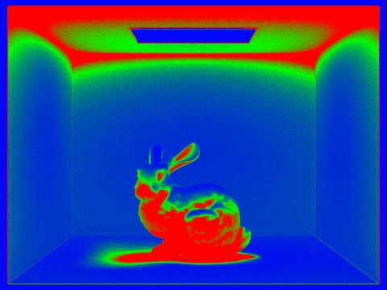 |
|
|
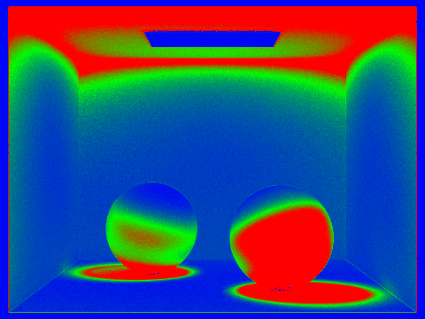 |